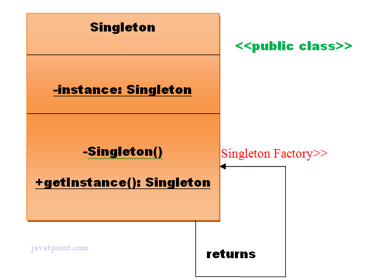
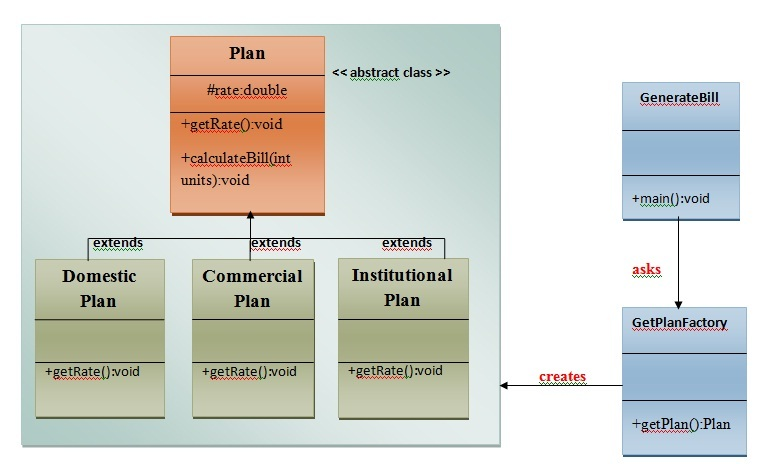
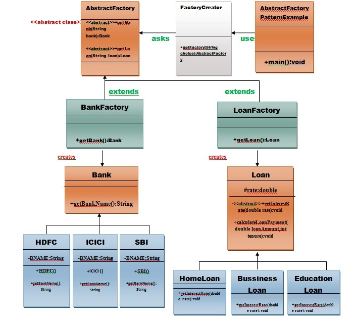
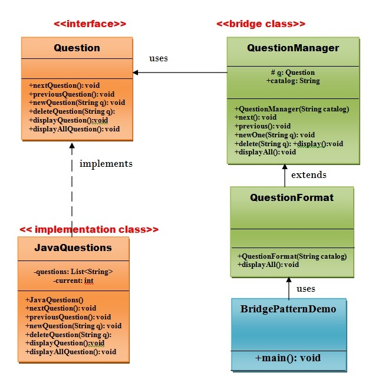
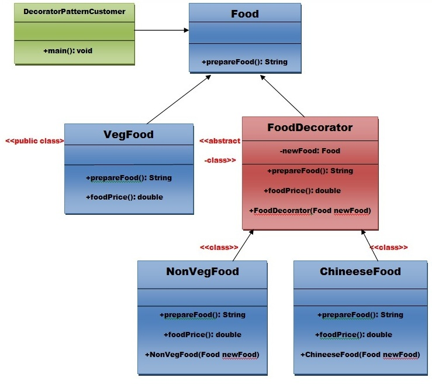
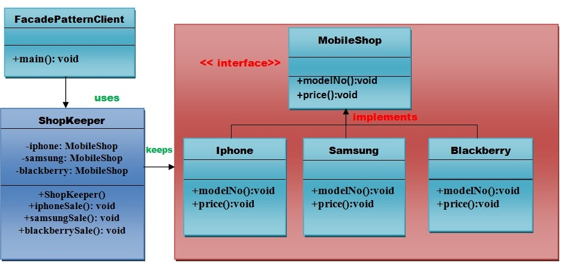
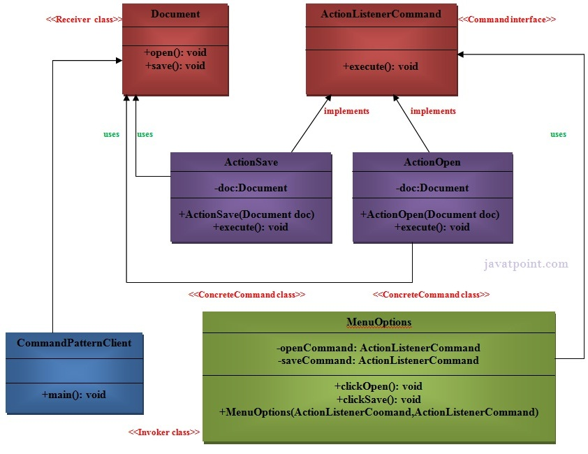
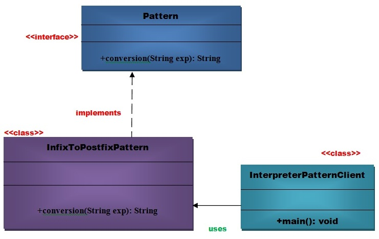
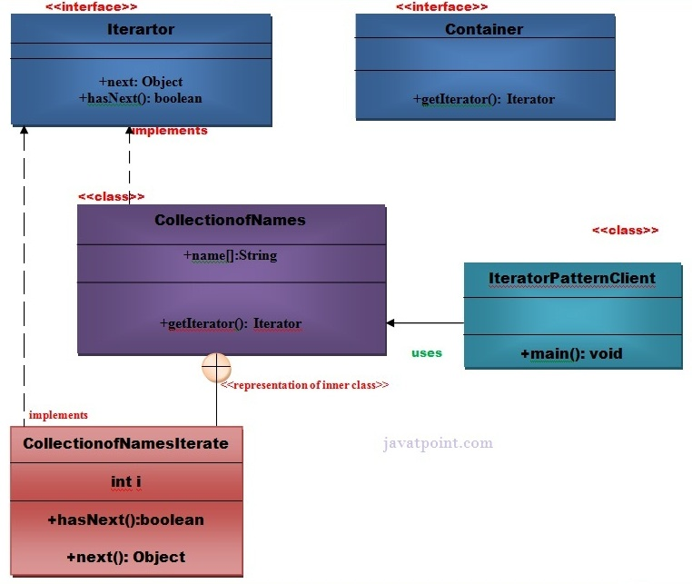

There are 3 different kinds of design patterns used in Java
Creational
Structural
Behavioral
Creational
Creational design patterns are concerned with the way of creating objects. These design patterns are used when a decision must be made at the time of instantiation of a class (i.e. creating an object of a class)
Examples
Singleton

Singleton Pattern says that just"define a class that has only one instance and provides a global point of access to it".
In other words, a class must ensure that only single instance should be created and single object can be used by all other classes.
Factory

A Factory Pattern or Factory Method Pattern says that just define an interface or abstract class for creating an object but let the subclasses
decide which class to instantiate. In other words, subclasses are responsible to create the instance of the class.
The Factory Method Pattern is also known as Virtual Constructor.
Abstract Factory

Abstract Factory Pattern says that just define an interface or abstract class for creating families of related (or dependent)
objects but without specifying their concrete sub-classes.That means Abstract Factory lets a class returns a factory of classes.
So, this is the reason that Abstract Factory Pattern is one level higher than the Factory Pattern.
An Abstract Factory Pattern is also known as Kit.
Structural
Structural design patterns are concerned with how classes and objects can be composed, to form larger structures.
The structural design patterns simplifies the structure by identifying the relationships.
These patterns focus on, how the classes inherit from each other and how they are composed from other classes.
Examples
Bridge

A Bridge Pattern says that just "decouple the functional abstraction from the implementation so that the two can vary independently".
The Bridge Pattern is also known as Handle or Body.
.
Decorator

A Decorator Pattern says that just "attach a flexible additional responsibilities to an object dynamically".
In other words, The Decorator Pattern uses composition instead of inheritance to extend the functionality of an object at runtime.
The Decorator Pattern is also known as Wrapper.
.
Facade

A Facade Pattern says that just "just provide a unified and simplified interface to a set of interfaces in a subsystem,
therefore it hides the complexities of the subsystem from the client".
In other words, Facade Pattern describes a higher-level interface that makes the sub-system easier to use.
Practically, every Abstract Factory is a type of Facade.
Behavioral
Behavioral design patterns are concerned with the interaction and responsibility of objects.
In these design patterns,the interaction between the objects should be in such a way that they can easily talk to each other and still should be loosely coupled.
That means the implementation and the client should be loosely coupled in order to avoid hard coding and dependencies.
Examples
Command

Command Pattern says that "encapsulate a request under an object as a command and pass it to invoker object.
Invoker object looks for the appropriate object which can handle this command and pass the command to the
corresponding object and that object executes the command".
It is also known as Action or Transaction.
Interpreter

An Interpreter Pattern says that "to define a representation of grammar of a given language, along with an
interpreter that uses this representation to interpret sentences in the language".
Basically the Interpreter pattern has limited area where it can be applied. We can discuss the Interpreter pattern only in terms of formal grammars but
in this area there are better solutions that is why it is not frequently used.
This pattern can applied for parsing the expressions defined in simple grammars and sometimes in simple rule engines.
Iterator

Iterator Pattern is used "to access the elements of an aggregate object sequentially without exposing its underlying implementation".
The Iterator pattern is also known as Cursor.
In collection framework, we are now using Iterator that is preferred over Enumeration.